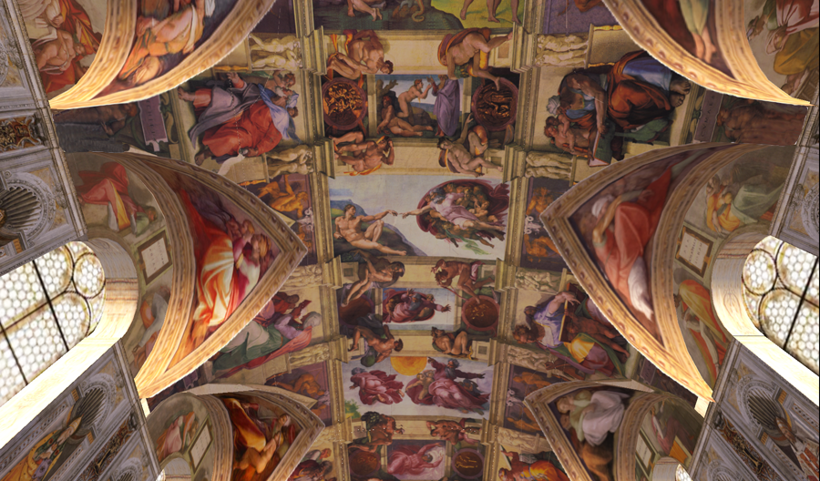

¿Sabías qué…

In Blog, Internacional, Sin Categor�A, Uncategorized
¿Sabías Qué…
Por: Gabriela Islas. 10 de mayo del 2016.
… Un día como hoy pero de 1508, Miguel Ángel comenzó a pintar la Capilla Sixtina?
Una de las obras pictóricas más complejas de la historia le fue otorgada por el Papa Julio II. Miguel Ángel había conocido la técnica de la pintura mural en el taller de Ghirlandaio, pero nunca la había puesto en práctica.
El techo de la Capilla Sixtina está dividido en varias secciones, que los elementos arquitectónicos simulados consiguen multiplicar los marcos de la bóveda y separan las nueve escenas del Génesis, que son las que reciben mayor atención gracias a su complejidad; sobre las lunetas de las ventanas y las enjutas laterales es donde están los antepasados de Cristo; los triángulos donde se encuentran los tronos de los Profetas y las Sibilas; y finalmente las enjutas de las esquinas o pechinas donde están las cuatro historias clave de la Salvación del pueblo de Dios.
Se le da una semblanza gótica a la estructura de la bóveda, pero Miguel Ángel no hizo ninguna crucería diagonal, solamente los triángulos podrían recordar en algo al estilo gótico.
Las nueve escenas del Génesis, ocupan el área central de la bóveda y atraen la mayor atención del público. En esta sección rectangular se encuentran narradas estas escenas, pudiendo agruparse en trípticos: las tres primeras historias desde el altar hablan de la Creación del Mundo; las tres siguientes, de la Creación del Hombre y de su expulsión del Paraíso; y las tres últimas, ilustran la historia de Noé. Algo raro en el orden de los frescos es que al entrar a la capilla por la puerta principal, la primera escena que vemos pintada es la de La embriaguez de Noé, en otras palabras, las escenas están pintadas en el orden inverso.
Las escenas son las siguientes:
- La Embriaguez de Noé (Génesis IX, 23): Se observa a Noé embriagado y dormido, Cam avisa a sus hermanos Sem y Jafet, que con su manto tapa la desnudez de su padre. El aspecto escultural de las figuras y su aptitud clásica revelan la influencia de los relieves antiguos.
- El Diluvio Universal (Génesis VII, 18): El pintor representó la escena con un gran dramatismo, se aprecia en los rostros la angustia y el horror delante de la furia de los elementos, según Ascanio Condivi, primer biógrafo de Miguel Ángel, esta fue la primera escena que pintó en la bóveda, las dificultades que pasó con la pintura le hicieron decidir trabajar solo, sin ayudantes.
- El Sacrificio de Noé (Génesis VIII, 20): Esta escena es la más académica, con un gran ritmo de composición y con una perspectiva rigurosa que se resalta con la posición en esquina del altar del sacrificio, las figuras están ordenadas dentro de una geometría ovalada.
- Caída del Hombre, pecado original y expulsión del Paraíso (Génesis II, 4): Desde esta zona se encuentra la segunda fase de la pintura, así se cree que una vez retirados los andamios, Miguel Ángel pudo contemplar desde la distancia el efecto de sus pinturas, y en consecuencia, se ve un aumento en la medida de las figuras, así como la disminución del número; naturalmente también es la necesidad ilustrativa en las siguientes escenas para las historias que cuenta. Esta escena corresponde a dos narraciones: el pecado original y la expulsión del Paraíso, con un equilibrio perfecto y una torsión de las figuras en contrapposto.
- Creación de Eva (Génesis II, 21): Del costado de Adán surge Eva con las manos en posición de rezar a Dios, su creador. La desnudez de Eva carece de seducción, el cuerpo presenta una gran pesadez y el rostro está realizado con trazos gruesos pareciéndose a una matrona romana, mientras Adán se muestra con un rostro tranquilo y con una sensación de dulzura en su sueño. Como modelo para esta representación el artista se inspiró en las esculturas que había visto en el año 1494, realizadas por Jacopo della Quercia para la puerta Magna de la Basílica de San Petronio en Bolonia. Se puede observar en este fresco la simbología de los cuatro elementos, en el suelo rocoso, la tierra, en el fondo una superficie de agua azul, el aire en toda la pintura y finalmente el fuego en el color rojo de la túnica de Dios.
- La Creación de Adán (Génesis I, 26): Nadie como Miguel Ángel había sabido plasmar la creación de la vida humana con tanta sencillez y fuerza. La inspiración de Miguel Ángel pudo venir del himno medieval “Veni Creator Spiritus” donde se pide que el dedo de la mano paterna derecha (digitus paternae dexterae) dé a los fieles, amor y corazón. Existe un contraste entre la estructura esférica del manto que envuelve al Creador con todos los ángeles y el alargar la línea de su cuerpo hacia Adán, rebosando energía y una dinámica violenta. Adán en cambio, muestra una soberbia belleza con unas formas armónicas e indolentes dando la mano para encontrar la vida.
- Separación de las aguas y la tierra (Génesis I, 9): Aquí representó a Dios volando con los dos brazos extendidos para mostrar la energía en sus manos y dando orden para la separación de las aguas y la tierra.
- Creación de los astros y las plantas (Génesis I, 4): En este tramo, se representan el tercer y cuarto día de la creación, la figura de Dios de espaldas crea las plantas y el lado de frente con un gesto poderoso crea los astros, la doble presencia quizás alude a la omnipresencia del Creador.
- Separación de la luz y la oscuridad (Génesis I, 4): Con una gran originalidad en el escorzo, las dos manos separan la noche del día, como si fuese un atlante, Dios, soporta el peso del cosmos.
Se alternan en estas escenas algunos desnudos masculinos llamados “ignudi” los cuales dan un toque sensual a la obra, y algunos medallones que representan otros momentos en la historia de la Biblia, pintados como si tuviesen un grabado imitando el bronce. Miguel Ángel concluyó su obra en el año 1512.
Tags:
Internacional